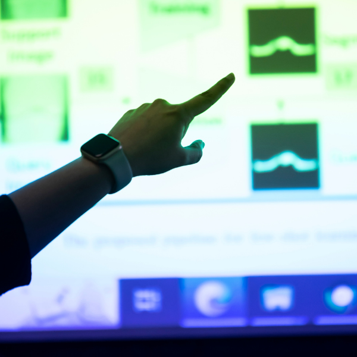

Pitt Online Has a New Home
The future of online learning is here. Access world-class Pitt education from anywhere in the world, built for flexibility and designed for your success.
CONTACT US
Programs by Academic Discipline
Explore areas of study to find the program that fits your aspirations. Select a category below to dive deeper.
Business
Data Science and Technology
Education
- Critical Technology and Digital Media for Learning (Cert)
- Curriculum and Instruction (MEd)
- Doctor of Education (EdD) - Hybrid
- Infant Mental Health (Cert)
- Instructional Design and Technology (Cert)
- K-12 Principal (Cert)
- Orientation and Mobility Specialist (Cert and MEd) - Hybrid
- Reading Education Specialist (Cert and MEd)
- Science, Technology, Engineering, Art and Mathematics/Steam Education (Cert)
- Supervisor of Special Education (Cert) - Hybrid
- Teacher of Students with Visual Impairment and Blindness (Cert and MEd) - Hybrid
Engineering
Health Care and Wellness
Law
Nursing
Pharmacy
Public Policy and International Relations
Social Work
Bachelor of Science in Nursing
Advance your clinical practice with our nationally-ranked program. Designed for working professionals seeking flexibility and excellence.
LEARN ABOUT BSN chevron_right
Health Informatics and AI
Bridge the gap between healthcare and technology. Master the data-driven future of medicine with cutting-edge AI curricula.
EXPLORE HEALTH TECH chevron_rightEverything You Need, One Login Away
Online students get the same tools, support and services as every Pitt student — all accessible remotely through myPitt.
Your Home Base
myPitt puts courses, grades, email, Canvas, your Panther Card and university communications in one place.
Support When You Need It
IT help, academic advising, the online writing center, billing, registrar, and veteran and disability services are all available to you.
Course Tools & Materials
Order textbooks, access the library system, schedule testing center appointments and get set up before your first class starts.
Explore Online Programs by School
Interested in Learning More?
Connect with an admissions advisor and take the first step toward your degree.